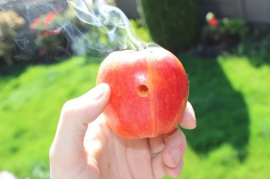

Tutaj tego, szybki przepis na bonio z jablka, zapraszam goraco!
 Piekny efekt naszej pracy
Nie bedziecie wiele potrzebowali rzeczy, aby stworzyc to cudenko, juz wam mowie co i jak, po kolei
- Jablko
- Dlugopis, ktory ma cienki wklad najlepiej
- Zapalniczka, do podpalenia czegokolwiek co w jablku zostanie umieszczone
- Cos, aby umiescic w jablku
W takim razie co teraz
- Wyciagnijcie wklad z dlugopisu, powoli i ostroznie, aby nie stracic zadnej czesci, bo zlozenie potem bedzie po prostu awykonalne
- Na samej gorze jablka, tam gdzie jest ten dupeczek, wykreccie go, aby nam nie przeszkadzal, po prostu go usunce stamtad i w jego miejscu wbijcie kilka razy w jedno miejsce wklad do dlugopisu, aby wyrobic cienka dziurke
- Nastepnie z boku jablka, dowolne miejsce ale z boku, wbijcie juz caly dlugopis, aby wyrobic wieksza dziure, to bedzie wlasnie nasz ustnik.
- Dmuchnijcie mocno w ustnik, aby pozbyc sie niepotrzebnych czesci jablka, ktore zostaly po naszej wewnetrznej eskploracji jakze tego pieknego owocu
- U gory wlozcie cos cos cos, podpalcie sobie, jednoczesnie wciagajac powietrze z ustnika naszego, ktory przed chwila sobie wyrobilismy i jazda
Tak wlasnie moi drodzy zaczyna sie uzaleznienie